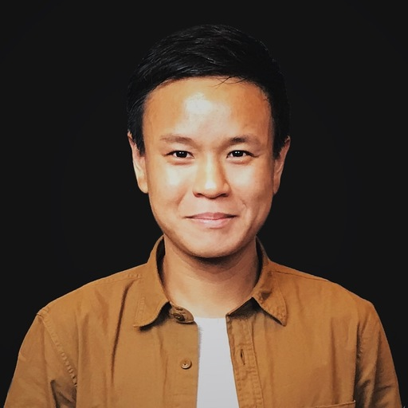

Chip Dong Lim

Chip Dong Lim is a Lead Product Designer at Grab, helping driver-partners connect to consumers in a fast, highly reliable, and cost-efficient platform manner.
For the past 8 years, Chip led design strategies with startups and corporates including TradeGecko (acquired by Intuit for $80m), IBM Design Austin, Fave Group (acquired by Pine Labs India for $45m), and co-founded a mobile-first medical management platform serving mobile clinics and aged care facilities.
LinkedInMedium